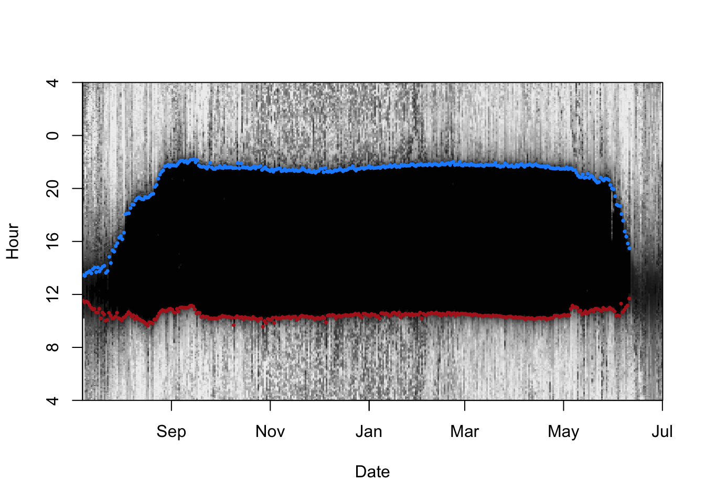
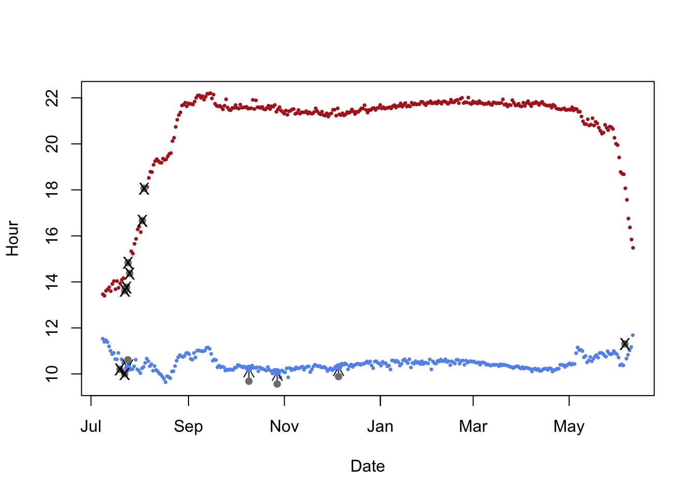
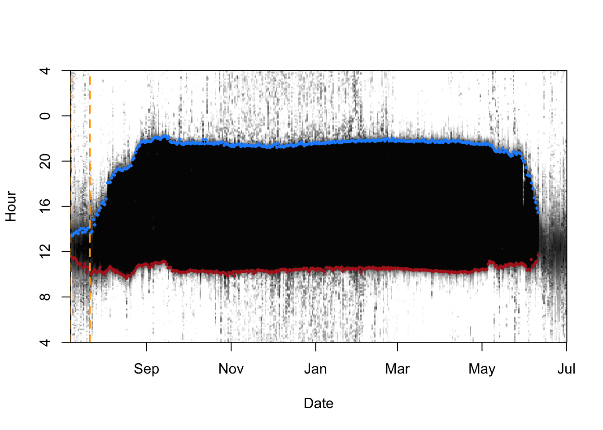
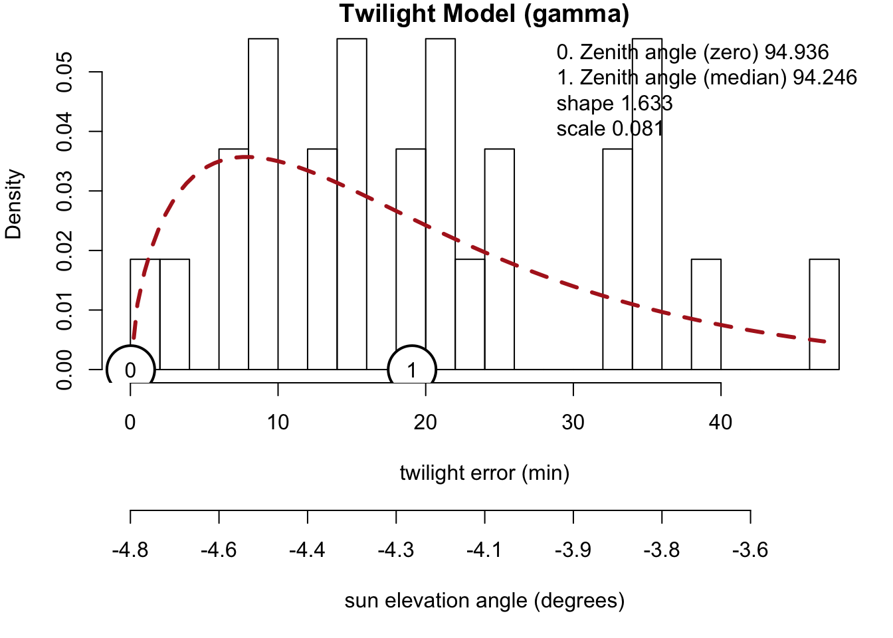
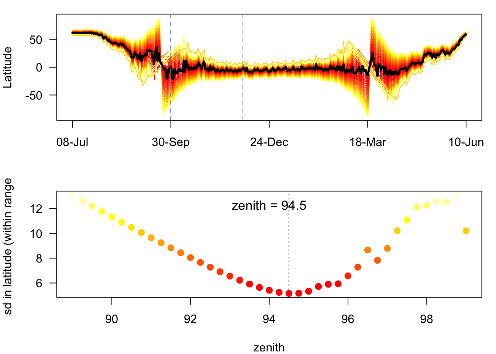
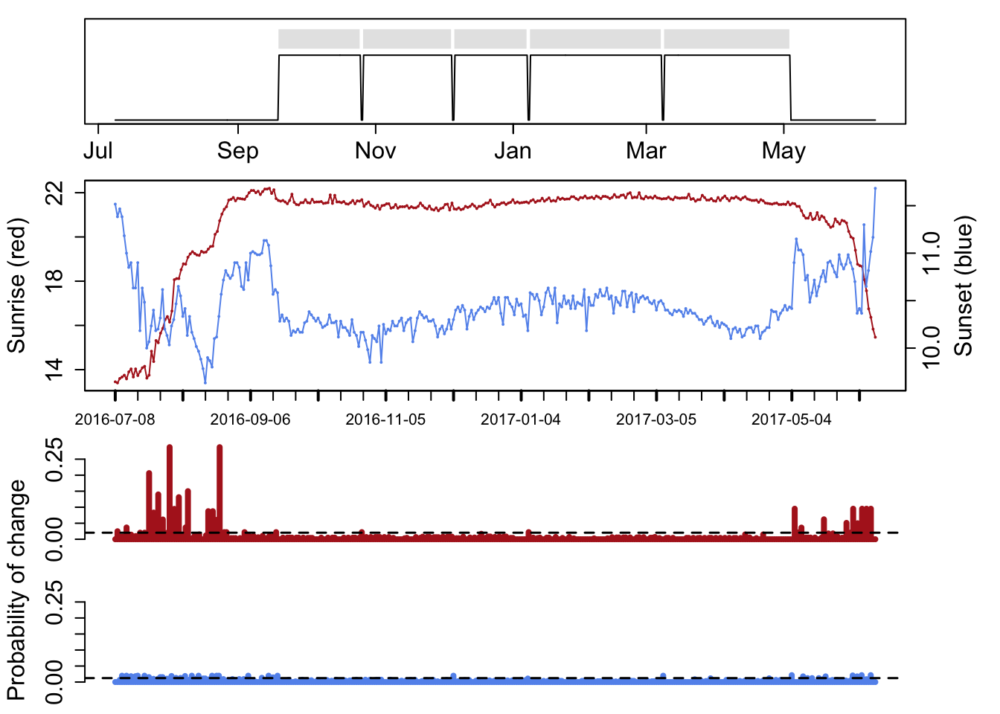
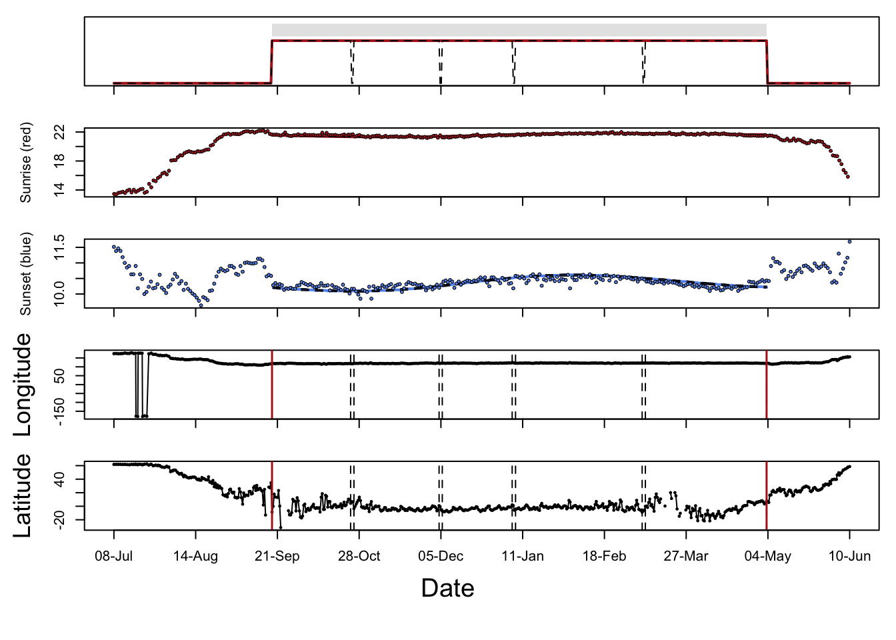
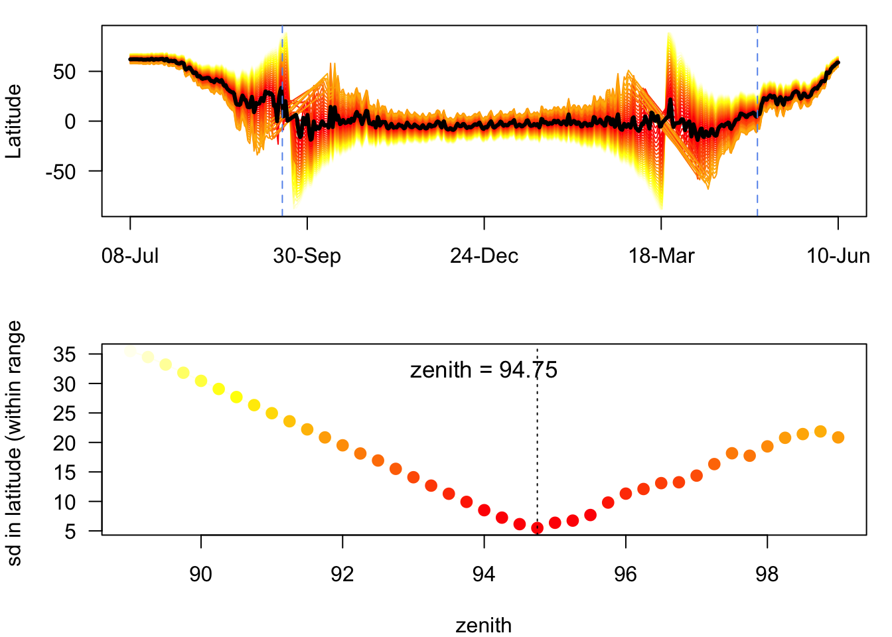
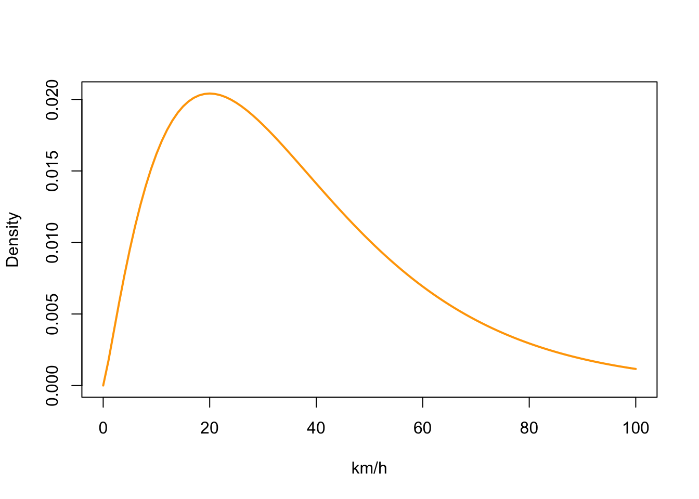
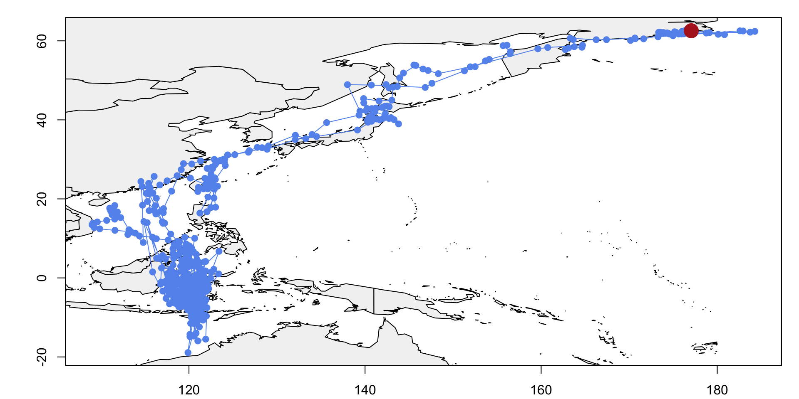

In this vignette we look at calculating and plotting the migration path of the Red-neck Phallarope Phalaropus lobatus. The use of the data was kindly givenby Tong Mu from the Department of Ecology and Evolutionary Biology, Princeton University, USA. The original paper defining the tracking method and results can be found here1. The migration track of Phalarope BA055 starts from the breeding grounds of Chukotka in around the Bering Sea, to the over wintering grounds in the East Indiesl a round trip of some 20,000km.
This vignette makes extensive use of the code within the manual Light-Level Geolocator Analyses: A user’s guide 2.
# Load librarieis
library(GeoLocTools)
library(GeoLight)
library(TwGeos)
library(SGAT)
library(MASS)
library(dplyr)
library(raster)
library(maptools)The data collected uses a geolocator made by Migrate Technology Ltd logger. The configuration of the geolocator was as follows:
Max record length = 15 months. Total battery life upto 23 months. Logger is currently 14 months old.
Approx 0.5’C resolution. Conductivity >63 for ‘wets’ count. Light range 4, ambient. XT.
Let’s load up the raw data from BA055’s journey.
raw <- read.csv("data_analysis_files/geoloc_data/Phalarope.csv")
# Create datasets for geo-location and additional measurements
d.lux <- raw %>%
# Select omly data related too light levels
dplyr::filter(sensor.type == "solar-geolocator-raw")%>%
# Convert data too POSIX format
mutate(Date = as.POSIXct(.$Date, tz = "UTC")) %>%
# Select only only one track (there are two in the file)
filter(tag.local.identifier == "BA055") %>%
# Log transfrom light intensity
mutate(Light = log(.$Light)) %>%
# Selecy only those columns required
dplyr::select(Date, Light)
head(d.lux)## Date Light
## 1 2016-07-08 10:08:14 4.659725
## 2 2016-07-08 10:13:14 4.761849
## 3 2016-07-08 10:18:14 2.692056
## 4 2016-07-08 10:23:14 3.911303
## 5 2016-07-08 10:28:14 2.525008
## 6 2016-07-08 10:33:14 2.324347We now have the lux information by date and time. Now we need to calibrate the data.
# BA055's departure/capture point
lon.calib <- 177.05
lat.calib <- 62.55
# Calibration times - prior to migration
tm.calib <- as.POSIXct(c("2016-07-08", "2016-07-22"), tz= "UTC")
# Days on track
tm.track <- as.POSIXct(c("2016-07-23", "2017-06-10"), tz= "UTC")Now we can calculate twilight times.
# Light level threshold between night and day
threshold <- 2
# adjusts the y-axis to put night (dark shades) in the middle
offset <- 4
# maximum light level (log transformed)
lmax <- 12
# Interactive process that cannot be executed in rmarkdown.
# Can define minimum dark period. Here it is set at 4 hours (240 minutes)
### The function preprocessLight opens two interactive plots and you have to go through 4 different steps:
### -1. Define the desired period with left click on the left boundary and right clock on the right boundary. Press "a"
### to go to the next step.
### -2. Define seeds (one or multible) - a position during the night that shows clear sunrise/sunset boundaries. You can
### click on plot 1 to zoom into a region that will be shown in plot 2 (seeds need to be defined in plot 2). Press
### "a" to go to the next step.
### -3. Add non-defined twilights if necessary. Press "a" to go to the next step.
### -4. You can go through each twilight using the forward and backward arrows or click on specific twilight times. The
### selected twilight times will be shown in the second plot. You can change the twilight time by clickinga at the
### desired position and press "a". Press "q" to close plots and return to R.
### See ?preprocessLight for other functions
#twl <- preprocessLight(d.lux,
# threshold,
# offset = offset,
# zlim = c(0, lmax),
# #dark.min = 240,
# gr.Device = "x11")
#write.csv(twl,"BA055v2_twl.csv")
# Load BA055 track twilight data
twl <- read.csv("BA055v2_twl.csv")
# Converts twilights into appropriate format
twl$Twilight <- as.POSIXct(strptime(twl$Twilight, format="%Y-%m-%d %H:%M:%S"), tz = "UTC")
# Account for storing maximum values for each 5 minute period. This step will depend on tag type.
twl <- twilightAdjust(twl, 150)
# Show results of defining twilights against raw light data
lightImage(d.lux, offset = offset, zlim = c(0,lmax))
tsimagePoints(twl$Twilight, offset = offset, pch = 16, cex = 0.5,
# Sunrise is blue, sunset is red
col = ifelse(twl$Rise, "dodgerblue", "firebrick"))
There are some sunrises and sunsets that have been misclassified, so we can use the twlightEdit function to move these to where they should be.
twl <- twilightEdit(twilights = twl,
offset = offset,
window = 4, # two days before and two days after
outlier.mins = 25, # difference in mins
stationary.mins = 25, # are the other surrounding twilights within 25 mins of one another
plot = TRUE)
Now we need to calculate the zenith angle of the sun so that we can then generate track position tag data.
# Subset the twilight data with calibration periods
d.calib <- twl %>%
# Claibrate using dates before migration
filter(Twilight >= tm.calib[1]) %>%
filter(Twilight <= tm.calib[2]) %>%
# And those dates not removed during pre-porcessing
filter(!Deleted)
# Let's visualise the calibration dates on the light image
lightImage( tagdata = d.lux,
offset = offset,
zlim = c(0, 8))
# Plot the twilight bands
tsimagePoints(twl$Twilight, offset = offset, pch = 16, cex = 0.5,
# Sunrise is blue, sunset is red
col = ifelse(twl$Rise, "dodgerblue", "firebrick"))
# Plot the calibration period between vertical oragne lines
abline(v = tm.calib, lwd = 2, lty = 2, col = "orange")
# Generate the calibration model from the filtered twilight data
calib <- thresholdCalibration(
# Twilight times during calibration period
d.calib$Twilight,
# Sunset or sunrise
d.calib$Rise,
# BA055 departure location
lon.calib, lat.calib,
method = "gamma")
# Generate parameters of the error distribution
zenith <- calib[1]
zenith0 <- calib[2]
alpha <- calib[3:4]Does the model folllow a gamma distribution? There is an alternative approach to calibration using the Hill-Ekstrom theory to estimate the zenith. This approach proposes that the correct zenith angle should lead to the lowest variance in latitude estimates (i.e. flattest) during stationary periods. And the latter is most pronounced around the equinox. If the tracked animal has been stationary during the time of the equinox this period provides the best data for the Hill-Ekstrom calibration.
# Set dates for calibration to be where the sd is minimised
startDate <- "2016-09-30" #tm.track[1]
endDate <- "2016-11-30" #tm.track[2]
start = min(which(as.Date(twl$Twilight) == startDate))
end = max(which(as.Date(twl$Twilight) == endDate))
(zenith_he <- findHEZenith(twl, tol=0.01, range=c(start,end)))
## [1] 94.5The top panel shows the entire migration path (latitude) using different zenith angles with the black line indicating the latitude estimates with the smallest variation within the specified calibration range (in between the two blue dashed lines).
We can see that the standard deviation of the estimate for zenith is minimised at around 94.5.
#convert to geolight format
geo_twl <- export2GeoLight(twl)
# this is just to find places where birds have been for a long time
cL <- changeLight(twl=geo_twl, quantile=0.8, summary = F, days = 10, plot = T)
# merge site helps to put sites together that are separated by single outliers.
mS <- mergeSites(twl = geo_twl, site = cL$site, degElevation = 90-zenith0, distThreshold = 500)
#specify which site is the stationary one
site <- mS$site[mS$site>0] # get rid of movement periods
stationarySite <- which(table(site) == max(table(site))) # find the site where bird is the longest
#find the dates that the bird arrives and leaves this stationary site
start <- min(which(mS$site == stationarySite))
end <- max(which(mS$site == stationarySite))
(zenith_sd <- findHEZenith(twl, tol=0.01, range=c(start,end)))
## [1] 94.75There isn’t really that much difference (c0.5) between the two methods. Let’s go with 94.75 for z0.
zenith0 <- 94.75We need to provide a mean and standard deviation for a gamma distribution of flight speeds that get applied to each day of the analysis period. We typically want short (near zero) distance flights to be common and long distance flights to be relatively rare.
# Species movement model
# changed beta to fit slower moving birds
beta <- c(2.2, 0.06)
matplot(0:100, dgamma(0:100, beta[1], beta[2]),
type = "l", col = "orange",lty = 1,lwd = 2,ylab = "Density", xlab = "km/h")
Now we can visualise the track for BA055, prior to MCMC sampling
# Creates path from simple threshold estimates.
# Varying the "tol" value will change the duration of period surrounding the equinoxes that latitudes will not be estimated from light-level
# data. Instead latitudes will be estimated in a linear progression from the first twilight before the equinox period until the first twilight
# after the equinox ### period
path <- thresholdPath(twl$Twilight,
twl$Rise,
zenith = zenith0,
tol = 0.1,
unfold = TRUE)
x0 <- path$x
z0 <- trackMidpts(x0)
### Plots estimated longitudes from light-level data against time, adding a line indicating the longitude from
### deployment site for reference
opar <- par(mfrow = c(1, 1), mar = c(2,4,1,1)+0.1)
plot(x0, type = "n", xlab = "", ylab = "")
### Loads in basic world map
data(wrld_simpl)
plot(wrld_simpl, col = "grey95", add = T)
points(path$x, pch=19, col="cornflowerblue", type = "o")
points(lon.calib, lat.calib, pch = 16, cex = 2.5, col = "firebrick")
box()
abline(h = lon.calib)
abline(v = lat.calib)
Tong Mu , Pavel S. Tomkovich, Egor Y. Loktionov, Evgeny E. Syroechkovskiy, David S. Wilcove: Migratory routes of Red-necked Phalaropes Phalaropus lobatus breeding in southern Chukotka revealed by geolocators.↩
Lisovski, S., Bauer, S., Briedis, M., Davidson, S.C., Dhanjal-Adams, K.L., Hallworth, M.T., Karagicheva, J., Meier, C.M., Merkel, B., Ouwehand, J., Pedersen, L., Rakhimberdiev, E., Roberto-Charron, A., Seavy, N.E., Sumner, M.D., Taylor, C.M., Wotherspoon, S.J. & E.S. Bridge (2019) Light-Level Geolocator Analyses: A user’s guide. Journal of Animal Ecology.↩